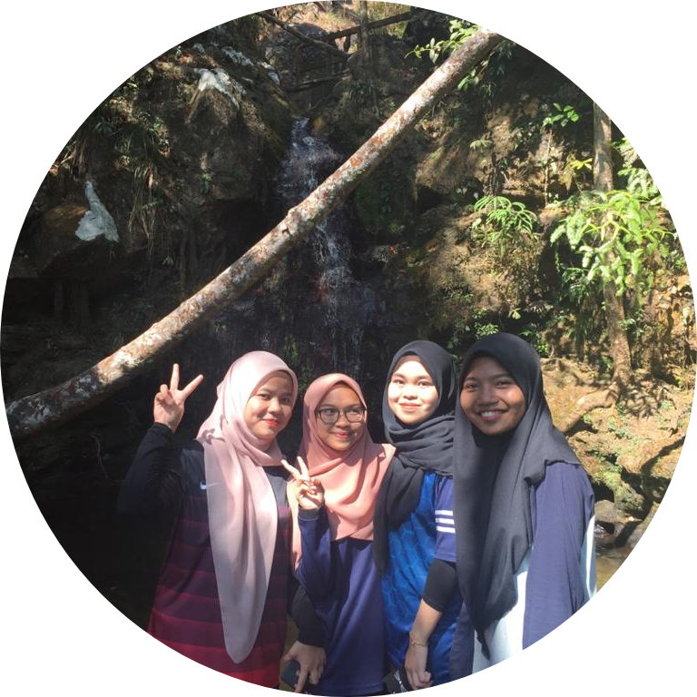
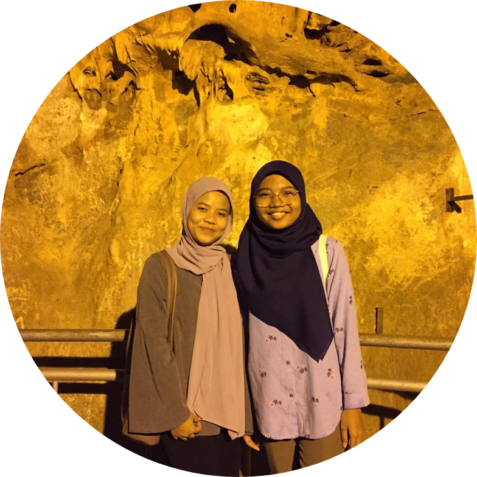
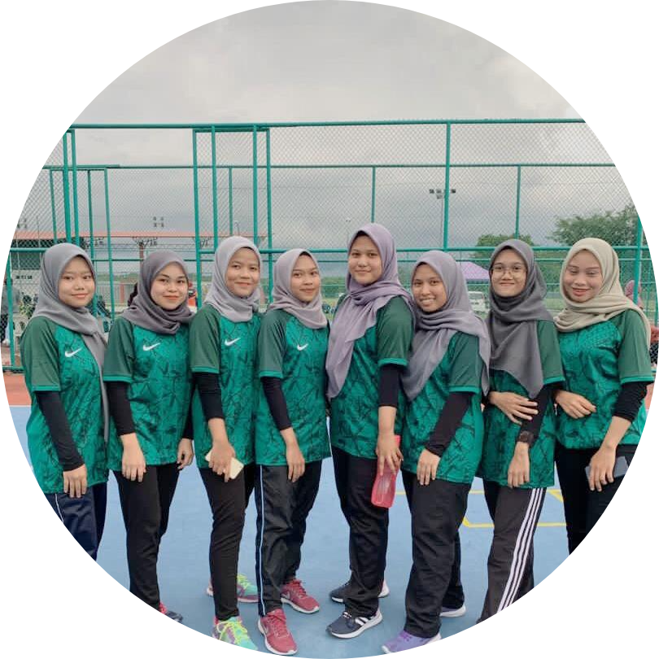

HIKING AT GUNUNG JERAI
My experience is going to Gunung Jerai
which is located in Kedah.
It was my first experience to go
hiking with my other friends.
It is very interesting because
I have never done an activity like this.
Although very tiring at first,
after reaching the top of Mount Jerai,
we could see the scenery up there.
Later, we also went into the forest
to go to the river area.
I will never forget this experience
because it was so fun and I hope
that my friend and i can
go hiking somewhere else. I think hiking is such relaxing
activities and also help to release stress.

SHORT VACAY IN PERLIS
In semester 2, my friend and I
went on holiday to Perlis.
We went there early in the morning.
We just want to spend time and have fun.
The interesting place we went
to was the Gua Kelam.
This cave is very interesting because visitors
can enter the cave and there is also a river.
Ticket prices are also very cheap.
Apart from that, we also went
to Padang Besar, Taman Ular and many other
places. Although only a day it was
very fun because we can spend our time together. I hope
we can go holiday at another place again.

PLAYING FUTSAL
My experience at UITM, I and my
other friends entered the
sport of futsal to represent
the college. Although I have
no experience in playing futsal
but I want to participate in
this sport because it looks fun.
We practiced playing fustal for
a short time because at
that time each of us was busy
with other activities.Basically we only practice
playing fustal in evening after class.
We could not
win this futsal game because
we fought with a great
team but we had fun when entering
this sport and we also got a
certificate. We are so happy because
we are able to join this sport.
| |